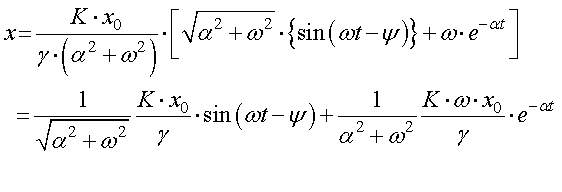
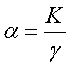
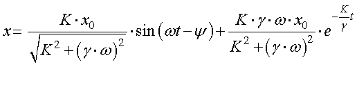
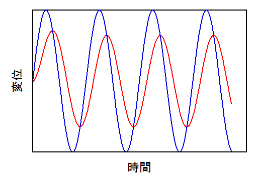
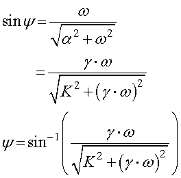
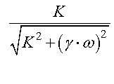

従って，変位，ｘ，は，

ここで，

であるので，

という結果を得ます． ここで，第二項は時間とともに減衰するので，定常的には，第一項のみとなります． グラフに書くと，

このように，入力した正弦波（青）に対して，出力波形（赤）は， 位相がずれている 振幅が減少している となります． その際の変化量は，
位相：

振幅：

となります．
なかなか長い道のりでした． では，もう少し簡単に解く方法を考えましょう．